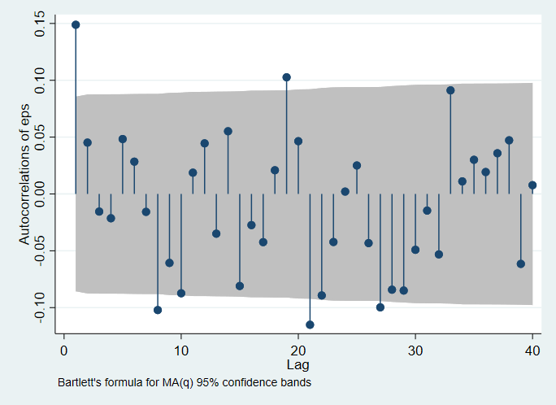

6 Regression with non-iid Errors
6.1 The Generalized Linear Regression Model
6.1.1 Types of Deviations from i.i.d. Errors
6.1.2 The Robust Estimator of VCE
. use fertil2.. describe
Contains data from fertil2.dta
obs: 4,361
vars: 30 2 Dec 2004 00:16
size: 484,071
-------------------------------------------------------------------------------
storage display value
variable name type format label variable label
-------------------------------------------------------------------------------
mnthborn float %9.0g
yearborn float %9.0g
age float %9.0g
electric float %9.0g
radio float %9.0g
tv float %9.0g
bicycle float %9.0g
educ float %9.0g
ceb float %9.0g
agefbrth float %9.0g
children float %9.0g
knowmeth float %9.0g
usemeth float %9.0g
monthfm float %9.0g
yearfm float %9.0g
agefm float %9.0g
idlnchld float %9.0g
heduc float %9.0g
agesq float %9.0g
urban float %9.0g
urbeduc float %9.0g
spirit float %9.0g
protest float %9.0g
catholic float %9.0g
frsthalf float %9.0g
educ0 float %9.0g
evermarr float %9.0g
_est_OLS byte %8.0g esample() from estimates store
_est_robust byte %8.0g esample() from estimates store
_est_cluster byte %8.0g esample() from estimates store
-------------------------------------------------------------------------------
Sorted by:
. summarize
Variable | Obs Mean Std. Dev. Min Max
-------------+---------------------------------------------------------
mnthborn | 4,361 6.331346 3.323333 1 12
yearborn | 4,361 60.43362 8.682723 38 73
age | 4,361 27.40518 8.685233 15 49
electric | 4,358 .1402019 .3472363 0 1
radio | 4,359 .7017665 .457535 0 1
-------------+---------------------------------------------------------
tv | 4,359 .0929112 .2903413 0 1
bicycle | 4,358 .2758146 .4469751 0 1
educ | 4,361 5.855996 3.927075 0 20
ceb | 4,361 2.441642 2.406861 0 13
agefbrth | 3,273 19.0113 3.092333 10 38
-------------+---------------------------------------------------------
children | 4,361 2.267828 2.222032 0 13
knowmeth | 4,354 .9632522 .1881636 0 1
usemeth | 4,290 .5776224 .4939956 0 1
monthfm | 2,079 6.270322 3.619943 1 12
yearfm | 2,079 76.91246 7.760183 50 88
-------------+---------------------------------------------------------
agefm | 2,079 20.68639 5.002383 10 46
idlnchld | 4,241 4.615892 2.219303 0 20
heduc | 1,956 5.144683 4.803028 0 20
agesq | 4,361 826.46 526.9232 225 2401
urban | 4,361 .5166246 .4997808 0 1
-------------+---------------------------------------------------------
urbeduc | 4,361 3.469158 4.294228 0 20
spirit | 4,361 .4221509 .493959 0 1
protest | 4,361 .2277001 .4193961 0 1
catholic | 4,361 .1024994 .3033387 0 1
frsthalf | 4,361 .5404724 .4984164 0 1
-------------+---------------------------------------------------------
educ0 | 4,361 .2077505 .4057437 0 1
evermarr | 4,361 .4767255 .4995153 0 1
_est_OLS | 4,361 .7367576 .4404433 0 1
_est_robust | 4,361 .7367576 .4404433 0 1
_est_cluster | 4,361 .7367576 .4404433 0 1
. use fertil2.. regress ceb age agefbrth usemeth
Source | SS df MS Number of obs = 3,213
-------------+---------------------------------- F(3, 3209) = 1433.16
Model | 9202.53439 3 3067.51146 Prob > F = 0.0000
Residual | 6868.49331 3,209 2.14038433 R-squared = 0.5726
-------------+---------------------------------- Adj R-squared = 0.5722
Total | 16071.0277 3,212 5.00343328 Root MSE = 1.463
------------------------------------------------------------------------------
ceb | Coef. Std. Err. t P>|t| [95% Conf. Interval]
-------------+----------------------------------------------------------------
age | .2237368 .003448 64.89 0.000 .2169763 .2304974
agefbrth | -.2606634 .0087954 -29.64 0.000 -.2779085 -.2434184
usemeth | .1873702 .0554298 3.38 0.001 .0786888 .2960516
_cons | 1.358134 .1737828 7.82 0.000 1.017397 1.69887
------------------------------------------------------------------------------
. estimates store nonRobust
. summarize ceb age agefbrth usemeth children if e(sample)
Variable | Obs Mean Std. Dev. Min Max
-------------+---------------------------------------------------------
ceb | 3,213 3.230003 2.236836 1 13
age | 3,213 29.93931 7.920432 15 49
agefbrth | 3,213 19.00498 3.098121 10 38
usemeth | 3,213 .6791161 .4668889 0 1
children | 3,213 2.999378 2.055579 0 13
. regress ceb age agefbrth usemeth, robust
Linear regression Number of obs = 3,213
F(3, 3209) = 874.06
Prob > F = 0.0000
R-squared = 0.5726
Root MSE = 1.463
------------------------------------------------------------------------------
| Robust
ceb | Coef. Std. Err. t P>|t| [95% Conf. Interval]
-------------+----------------------------------------------------------------
age | .2237368 .0046619 47.99 0.000 .2145962 .2328775
agefbrth | -.2606634 .0095616 -27.26 0.000 -.2794109 -.2419159
usemeth | .1873702 .0606446 3.09 0.002 .0684642 .3062762
_cons | 1.358134 .1675624 8.11 0.000 1.029593 1.686674
------------------------------------------------------------------------------
. estimates store Robust
. estimates table nonRobust Robust, b(%9.4f) se(%5.3f) t(%5.2f) p(%4.3f) title(
> Estimates of CEB with OLS and Robust Standard Errors)
Estimates of CEB with OLS and Robust Standard Errors
--------------------------------------
Variable | nonRobust Robust
-------------+------------------------
age | 0.2237 0.2237
| 0.003 0.005
| 64.89 47.99
| 0.000 0.000
agefbrth | -0.2607 -0.2607
| 0.009 0.010
| -29.64 -27.26
| 0.000 0.000
usemeth | 0.1874 0.1874
| 0.055 0.061
| 3.38 3.09
| 0.001 0.002
_cons | 1.3581 1.3581
| 0.174 0.168
| 7.82 8.11
| 0.000 0.000
--------------------------------------
legend: b/se/t/p6.1.3 The Cluster Estimator of VCE
. use fertil2.. regress ceb age agefbrth usemeth, cluster(children)
Linear regression Number of obs = 3,213
F(3, 13) = 20.91
Prob > F = 0.0000
R-squared = 0.5726
Root MSE = 1.463
(Std. Err. adjusted for 14 clusters in children)
------------------------------------------------------------------------------
| Robust
ceb | Coef. Std. Err. t P>|t| [95% Conf. Interval]
-------------+----------------------------------------------------------------
age | .2237368 .0315086 7.10 0.000 .1556665 .2918071
agefbrth | -.2606634 .0354296 -7.36 0.000 -.3372045 -.1841224
usemeth | .1873702 .0943553 1.99 0.069 -.016472 .3912125
_cons | 1.358134 .4248589 3.20 0.007 .4402818 2.275985
------------------------------------------------------------------------------6.1.4 The Newey–West Estimator of VCE
. use ukrates.. describe
Contains data from ukrates.dta
obs: 526
vars: 3 2 Dec 2004 10:43
size: 6,312
-------------------------------------------------------------------------------
storage display value
variable name type format label variable label
-------------------------------------------------------------------------------
rs float %9.0g
month float %tm
r20 float %9.0g
-------------------------------------------------------------------------------
Sorted by: month
. summarize
Variable | Obs Mean Std. Dev. Min Max
-------------+---------------------------------------------------------
rs | 526 7.651513 3.553109 1.561667 16.18
month | 526 168.5 151.9874 -94 431
r20 | 526 8.863726 3.224372 3.35 17.18
. quietly regress D.rs LD.r20
. estimates store nonHAC
. newey D.rs LD.r20, lag(5)
Regression with Newey-West standard errors Number of obs = 524
maximum lag: 5 F( 1, 522) = 36.00
Prob > F = 0.0000
------------------------------------------------------------------------------
| Newey-West
D.rs | Coef. Std. Err. t P>|t| [95% Conf. Interval]
-------------+----------------------------------------------------------------
r20 |
LD. | .4882883 .0813867 6.00 0.000 .3284026 .648174
|
_cons | .0040183 .0254102 0.16 0.874 -.0459004 .0539371
------------------------------------------------------------------------------
. estimates store NeweyWest
. estimates table nonHAC NeweyWest, b(%9.4f) se(%5.3f) t(%5.2f) p(%4.3f) title(
> Estimates of D.rs with OLS and Newey-West Standard Errors)
Estimates of D.rs with OLS and Newey-West Standard Errors
--------------------------------------
Variable | nonHAC NeweyWest
-------------+------------------------
r20 |
LD. | 0.4883 0.4883
| 0.067 0.081
| 7.27 6.00
| 0.000 0.000
|
_cons | 0.0040 0.0040
| 0.022 0.025
| 0.18 0.16
| 0.858 0.874
--------------------------------------
legend: b/se/t/p6.1.5 The Generalized Least Squares Estimator
6.2 Heteroskedasticity in the Error Distribution
6.2.2 Heteroskedasticity Between Groups of Observations
6.2.2.1 Testing for Heteroskedasticity Between Groups of Observations
. use NEdata.. describe
Contains data from NEdata.dta
obs: 120
vars: 6 24 Oct 2004 13:28
size: 2,640
-------------------------------------------------------------------------------
storage display value
variable name type format label variable label
-------------------------------------------------------------------------------
state long %8.0g state
year int %8.0g
pop float %9.0g
dpi float %9.0g
dpipc float %9.0g
ldpipc float %9.0g
-------------------------------------------------------------------------------
Sorted by:
. summarize
Variable | Obs Mean Std. Dev. Min Max
-------------+---------------------------------------------------------
state | 120 3.5 1.714986 1 6
year | 120 1990.5 5.790459 1981 2000
pop | 120 2196276 1931629 515594 6362076
dpi | 120 4.33e+07 4.46e+07 4385134 1.93e+08
dpipc | 120 18.15802 5.662848 8.153382 33.38758
-------------+---------------------------------------------------------
ldpipc | 120 2.848302 .3265395 2.098433 3.508184
. regress dpipc year
Source | SS df MS Number of obs = 120
-------------+---------------------------------- F(1, 118) = 440.17
Model | 3009.33617 1 3009.33617 Prob > F = 0.0000
Residual | 806.737449 118 6.83675804 R-squared = 0.7886
-------------+---------------------------------- Adj R-squared = 0.7868
Total | 3816.07362 119 32.0678456 Root MSE = 2.6147
------------------------------------------------------------------------------
dpipc | Coef. Std. Err. t P>|t| [95% Conf. Interval]
-------------+----------------------------------------------------------------
year | .8684582 .0413941 20.98 0.000 .7864865 .9504298
_cons | -1710.508 82.39534 -20.76 0.000 -1873.673 -1547.343
------------------------------------------------------------------------------
. predict double eps, residual
. robvar eps, by(state)
| Summary of Residuals
state | Mean Std. Dev. Freq.
------------+------------------------------------
CT | 4.167853 1.3596266 20
MA | 1.618796 .86550138 20
ME | -2.9841056 .93797625 20
NH | .51033312 .61139299 20
RI | -.8927223 .63408722 20
VT | -2.4201543 .71470977 20
------------+------------------------------------
Total | -6.063e-14 2.6037101 120
W0 = 4.3882072 df(5, 114) Pr > F = 0.00108562
W50 = 3.2989851 df(5, 114) Pr > F = 0.00806751
W10 = 4.2536245 df(5, 114) Pr > F = 0.001390646.2.2.2 Feasible Generalized Least Squares Estimation
. use NEdata.. regress dpipc year
Source | SS df MS Number of obs = 120
-------------+---------------------------------- F(1, 118) = 440.17
Model | 3009.33617 1 3009.33617 Prob > F = 0.0000
Residual | 806.737449 118 6.83675804 R-squared = 0.7886
-------------+---------------------------------- Adj R-squared = 0.7868
Total | 3816.07362 119 32.0678456 Root MSE = 2.6147
------------------------------------------------------------------------------
dpipc | Coef. Std. Err. t P>|t| [95% Conf. Interval]
-------------+----------------------------------------------------------------
year | .8684582 .0413941 20.98 0.000 .7864865 .9504298
_cons | -1710.508 82.39534 -20.76 0.000 -1873.673 -1547.343
------------------------------------------------------------------------------
. predict double eps, residual
. by state, sort: egen sd_eps = sd(eps)
. generate double gw_wt = 1/sd_eps^2
. tabstat sd_eps gw_wt, by(state)
Summary statistics: mean
by categories of: state
state | sd_eps gw_wt
-------+--------------------
CT | 1.359627 .5409545
MA | .8655014 1.334948
ME | .9379762 1.136623
NH | .611393 2.675218
RI | .6340872 2.48715
VT | .7147098 1.957675
-------+--------------------
Total | .8538824 1.688761
----------------------------
. regress dpipc year [aw = gw_wt]
(sum of wgt is 202.6513649171444)
Source | SS df MS Number of obs = 120
-------------+---------------------------------- F(1, 118) = 698.19
Model | 2845.55409 1 2845.55409 Prob > F = 0.0000
Residual | 480.921278 118 4.07560405 R-squared = 0.8554
-------------+---------------------------------- Adj R-squared = 0.8542
Total | 3326.47537 119 27.9535745 Root MSE = 2.0188
------------------------------------------------------------------------------
dpipc | Coef. Std. Err. t P>|t| [95% Conf. Interval]
-------------+----------------------------------------------------------------
year | .8444948 .0319602 26.42 0.000 .7812049 .9077847
_cons | -1663.26 63.61705 -26.14 0.000 -1789.239 -1537.281
------------------------------------------------------------------------------6.2.3 Heteroskedasticity in Grouped Data
6.2.3.1 Feasible Generalized Least Squares Estimation
. use pubschl.. describe
Contains data from pubschl.dta
obs: 420
vars: 18 2 Dec 2004 12:36
size: 58,380
-------------------------------------------------------------------------------
storage display value
variable name type format label variable label
-------------------------------------------------------------------------------
observation_n~r float %9.0g
dist_cod float %9.0g
county str18 %18s
district str53 %53s
gr_span str8 %8s
enrl_tot float %9.0g
teachers float %9.0g
calw_pct float %9.0g
meal_pct float %9.0g
computer float %9.0g
testscr float %9.0g
comp_stu float %9.0g
expn_stu float %9.0g
str float %9.0g
avginc float %9.0g
el_pct float %9.0g
read_scr float %9.0g
math_scr float %9.0g
-------------------------------------------------------------------------------
Sorted by:
. summarize
Variable | Obs Mean Std. Dev. Min Max
-------------+---------------------------------------------------------
observatio~r | 420 210.5 121.3878 1 420
dist_cod | 420 67472.81 3466.995 61382 75440
county | 0
district | 0
gr_span | 0
-------------+---------------------------------------------------------
enrl_tot | 420 2628.793 3913.105 81 27176
teachers | 420 129.0674 187.9127 4.85 1429
calw_pct | 420 13.24604 11.45482 0 78.9942
meal_pct | 420 44.70524 27.12338 0 100
computer | 420 303.3833 441.3413 0 3324
-------------+---------------------------------------------------------
testscr | 420 654.1565 19.05335 605.55 706.75
comp_stu | 420 .1359266 .0649558 0 .4208333
expn_stu | 420 5312.408 633.9371 3926.07 7711.507
str | 420 19.64043 1.891812 14 25.8
avginc | 420 15.31659 7.22589 5.335 55.328
-------------+---------------------------------------------------------
el_pct | 420 15.76816 18.28593 0 85.53972
read_scr | 420 654.9705 20.10798 604.5 704
math_scr | 420 653.3426 18.7542 605.4 709.5
. regress read_scr expn_stu comp_stu meal_pct
Source | SS df MS Number of obs = 420
-------------+---------------------------------- F(3, 416) = 565.36
Model | 136046.267 3 45348.7558 Prob > F = 0.0000
Residual | 33368.3632 416 80.2124115 R-squared = 0.8030
-------------+---------------------------------- Adj R-squared = 0.8016
Total | 169414.631 419 404.330861 Root MSE = 8.9561
------------------------------------------------------------------------------
read_scr | Coef. Std. Err. t P>|t| [95% Conf. Interval]
-------------+----------------------------------------------------------------
expn_stu | .0046699 .0007204 6.48 0.000 .0032538 .006086
comp_stu | 19.88584 7.168347 2.77 0.006 5.795143 33.97654
meal_pct | -.635131 .0164777 -38.54 0.000 -.667521 -.602741
_cons | 655.8528 3.812206 172.04 0.000 648.3592 663.3464
------------------------------------------------------------------------------
. regress read_scr expn_stu comp_stu meal_pct [aw = enrl_tot]
(sum of wgt is 1,104,093)
Source | SS df MS Number of obs = 420
-------------+---------------------------------- F(3, 416) = 906.75
Model | 123692.671 3 41230.8903 Prob > F = 0.0000
Residual | 18915.9815 416 45.4711093 R-squared = 0.8674
-------------+---------------------------------- Adj R-squared = 0.8664
Total | 142608.652 419 340.354779 Root MSE = 6.7432
------------------------------------------------------------------------------
read_scr | Coef. Std. Err. t P>|t| [95% Conf. Interval]
-------------+----------------------------------------------------------------
expn_stu | .0055534 .0008322 6.67 0.000 .0039176 .0071892
comp_stu | 27.26378 8.197228 3.33 0.001 11.15063 43.37693
meal_pct | -.6352229 .013149 -48.31 0.000 -.6610696 -.6093762
_cons | 648.988 4.163875 155.86 0.000 640.8031 657.1728
------------------------------------------------------------------------------6.3 Serial Correlation in the Error Distribution
6.3.1 Testing for Serial Correlation
. use ukrates.. describe
Contains data from ukrates.dta
obs: 526
vars: 3 2 Dec 2004 10:43
size: 6,312
-------------------------------------------------------------------------------
storage display value
variable name type format label variable label
-------------------------------------------------------------------------------
rs float %9.0g
month float %tm
r20 float %9.0g
-------------------------------------------------------------------------------
Sorted by: month
. summarize
Variable | Obs Mean Std. Dev. Min Max
-------------+---------------------------------------------------------
rs | 526 7.651513 3.553109 1.561667 16.18
month | 526 168.5 151.9874 -94 431
r20 | 526 8.863726 3.224372 3.35 17.18
. regress D.rs LD.r20
Source | SS df MS Number of obs = 524
-------------+---------------------------------- F(1, 522) = 52.88
Model | 13.8769739 1 13.8769739 Prob > F = 0.0000
Residual | 136.988471 522 .262430021 R-squared = 0.0920
-------------+---------------------------------- Adj R-squared = 0.0902
Total | 150.865445 523 .288461654 Root MSE = .51228
------------------------------------------------------------------------------
D.rs | Coef. Std. Err. t P>|t| [95% Conf. Interval]
-------------+----------------------------------------------------------------
r20 |
LD. | .4882883 .0671484 7.27 0.000 .356374 .6202027
|
_cons | .0040183 .022384 0.18 0.858 -.0399555 .0479921
------------------------------------------------------------------------------
. predict double eps, residual
(2 missing values generated)
. estat bgodfrey, lags(6)
Breusch-Godfrey LM test for autocorrelation
---------------------------------------------------------------------------
lags(p) | chi2 df Prob > chi2
-------------+-------------------------------------------------------------
6 | 17.237 6 0.0084
---------------------------------------------------------------------------
H0: no serial correlation
. wntestq eps
Portmanteau test for white noise
---------------------------------------
Portmanteau (Q) statistic = 82.3882
Prob > chi2(40) = 0.0001
. ac eps

Autocorrelogram of regression residuals
6.3.2 FGLS Estimation with Serial Correlation
. use ukrates.. regress D.rs LD.r20
Source | SS df MS Number of obs = 524
-------------+---------------------------------- F(1, 522) = 52.88
Model | 13.8769739 1 13.8769739 Prob > F = 0.0000
Residual | 136.988471 522 .262430021 R-squared = 0.0920
-------------+---------------------------------- Adj R-squared = 0.0902
Total | 150.865445 523 .288461654 Root MSE = .51228
------------------------------------------------------------------------------
D.rs | Coef. Std. Err. t P>|t| [95% Conf. Interval]
-------------+----------------------------------------------------------------
r20 |
LD. | .4882883 .0671484 7.27 0.000 .356374 .6202027
|
_cons | .0040183 .022384 0.18 0.858 -.0399555 .0479921
------------------------------------------------------------------------------
. prais D.rs LD.r20, nolog
Prais-Winsten AR(1) regression -- iterated estimates
Source | SS df MS Number of obs = 524
-------------+---------------------------------- F(1, 522) = 25.73
Model | 6.56420242 1 6.56420242 Prob > F = 0.0000
Residual | 133.146932 522 .25507075 R-squared = 0.0470
-------------+---------------------------------- Adj R-squared = 0.0452
Total | 139.711134 523 .2671341 Root MSE = .50505
------------------------------------------------------------------------------
D.rs | Coef. Std. Err. t P>|t| [95% Conf. Interval]
-------------+----------------------------------------------------------------
r20 |
LD. | .3495857 .068912 5.07 0.000 .2142067 .4849647
|
_cons | .0049985 .0272145 0.18 0.854 -.0484649 .0584619
-------------+----------------------------------------------------------------
rho | .1895324
------------------------------------------------------------------------------
Durbin-Watson statistic (original) 1.702273
Durbin-Watson statistic (transformed) 2.007414